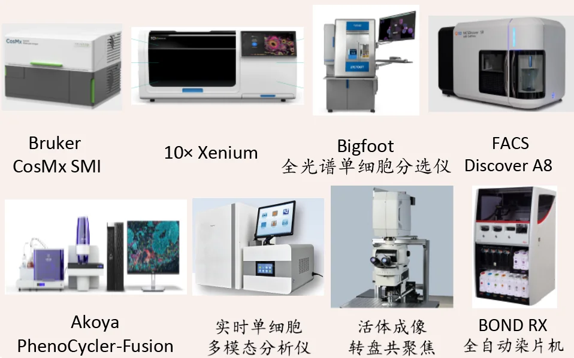

依托 CosMx SMI、Xenium 和 PhenoCycler-Fusion，在完整组织结构中检测 RNA 与蛋白标记，解析细胞组成、功能状态和空间分布。
技术平台
人类表型组研究院空间组平台介绍
平台围绕空间组学、单细胞分选、实时单细胞多模态分析、活体成像和自动化染片等实验能力建设，为组织原位解析和细胞功能研究提供技术支撑。
核心设备
核心设备体系
平台建设覆盖空间分子成像、原位空间转录组、多重空间蛋白成像、全光谱单细胞分选、图像辅助流式分析、自动化染色、实时单细胞多模态分析和活体动态成像等关键技术环节。

设备列表
平台设备
01
Bruker CosMx SMI
空间分子成像平台，用于组织原位空间组学检测。
02
10x Genomics Xenium
原位空间转录组平台，用于组织切片中 RNA 信号的空间定位和检测。
03
Akoya PhenoCycler-Fusion
空间蛋白组多重成像平台，用于组织内多标记蛋白检测和细胞表型解析。
04
Bigfoot 全光谱单细胞分选仪
面向多参数流式分析和单细胞分选的高通量平台。
05
FACSDiscover A8
结合全光谱流式分析与细胞成像信息，用于复杂细胞群体识别。
06
BOND RX 全自动染片机
用于组织切片自动化染色，支撑空间组学和病理相关实验流程。
07
实时单细胞多模态分析仪
用于单细胞水平多指标实时检测和功能状态分析。
08
活体成像转盘共聚焦
用于活细胞、组织切片和动物样本的动态成像。
应用方向
技术支撑方向
依托 Bigfoot 和 FACSDiscover A8，支持免疫细胞分型、复杂细胞群体识别、高通量分选和图像辅助流式分析。
依托 BOND RX、实时单细胞多模态分析仪和活体成像转盘共聚焦，支撑组织染色、单细胞功能检测和动态成像实验。